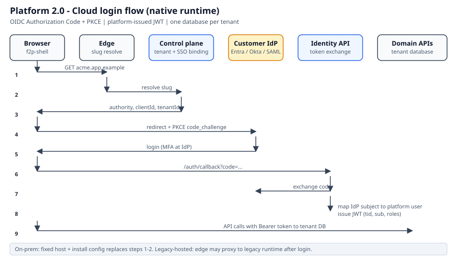

tid, sub, and roles.F2P.Identity / @f2p/identity) owns login accounts, roles, and tenant-admin user management.
| Step | Actor | Action |
|---|---|---|
| 1 | Browser | User opens https://{slug}.app.example |
| 2 | Edge | Resolve slug via control plane → tenantId + OIDC settings |
| 3 | Shell | Redirect to customer IdP with PKCE code_challenge |
| 4 | IdP | User authenticates (MFA enforced by customer IdP) |
| 5 | Identity API | Exchange auth code; map IdP subject → platform user |
| 6 | Identity API | Issue platform JWT (tid, sub, roles) |
| 7 | Domain APIs | Validate JWT; open connection to tenant's dedicated database |
Fixed host and tenantId from install config replace slug lookup. Same OIDC sequence; signing keys and user store may be customer-managed.

| Layer | UI / API | Responsibility |
|---|---|---|
| Platform operator | Admin backoffice | Provision tenant, bind SSO, enable packs, bootstrap first tenant admin |
| Tenant administrator | @f2p/identity | Create/edit/disable users; assign roles; link Person records |
| End user | Planning, Hours, WBS, … | Book hours, view components, edit activities (permission-gated) |
| State | Meaning | Typical transition |
|---|---|---|
| Invited | Pre-provisioned by tenant admin; not yet signed in | Admin creates user with email + roles |
| Pending | Awaiting first successful login | Invite sent or JIT record created |
| Active | Can sign in and use product per roles | First OIDC / local login succeeds |
| Disabled | Login blocked; data retained | Admin disable or seat reclaim |
| Retired | Offboarded; audit trail kept | Admin retires after project end |
Legacy F2P separates User (authentication) from Person (workforce entity for hours and assignments). V2 preserves this:
| Mode | Tenant admin | When |
|---|---|---|
| Admin-provisioned | Creates user before first login; assigns roles | Default — most shipyard customers |
| JIT from IdP | Upgrades roles after auto-created login | IdP-led onboarding; jitProvisioning=true |
| Local accounts | Creates username/password | On-prem air-gap; allowLocalLogin=true |
| Persona | Example permissions |
|---|---|
| Viewer | Planning.Read, Wbs.Read |
| Planner | Planning.Read/Write, Wbs.Read |
| Hour booker | Hours.Write + project read scope |
| Team lead | Above + hour approvals |
| Tenant admin | Identity.Admin |
| Flag | Effect |
|---|---|
adminCanCreateUsers | Tenant admin can pre-provision users (recommended true) |
jitProvisioning | Auto-create user on first IdP login |
allowLocalLogin | Local account UI (on-prem) |
seatLimit | Block create when license cap reached |
defaultRoleOnJit | e.g. Viewer until admin upgrades |
| Artefact | Type | Owns |
|---|---|---|
F2P.Identity | Backend bounded-context module | Auth API, users, roles, permissions |
@f2p/identity | Frontend context module | User/role admin screens under Settings |
f2p-shell | Host app (not a domain module) | Login, callback, shell chrome, lazy routes |
| Admin backoffice | Separate app | Tenant provisioning, SSO binding, first admin bootstrap |